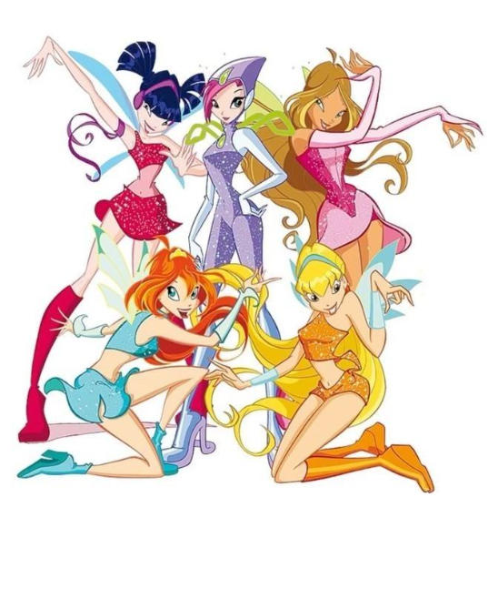

Quando o mundo precisa, elas se unem.
Conheça as curiosidades e os maiores segredos que tornam o Clube das Winx uma força imbatível contra as trevas.

Mais fortes quando estao juntas
Poderes únicos
Cada fada domina um elemento mágico próprio, desde o fogo do dragão até a tecnologia avançada.
União de reinos
Princesas e guardiãs de diferentes planetas do Universo Mágico unidas por Alfea.
Transformações
A cada novo desafio ou vilão, as Winx alcançam um nível de magia ainda mais poderoso.